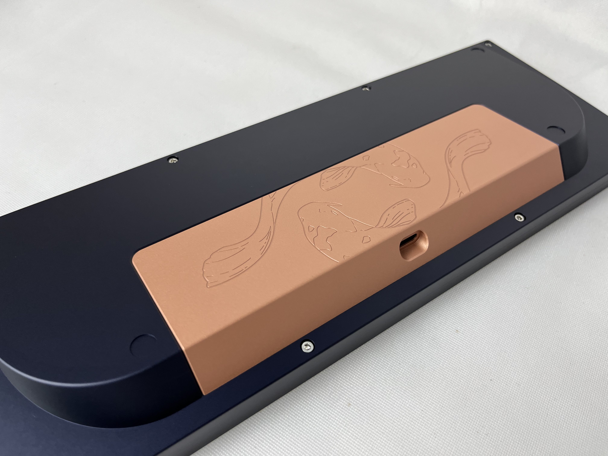
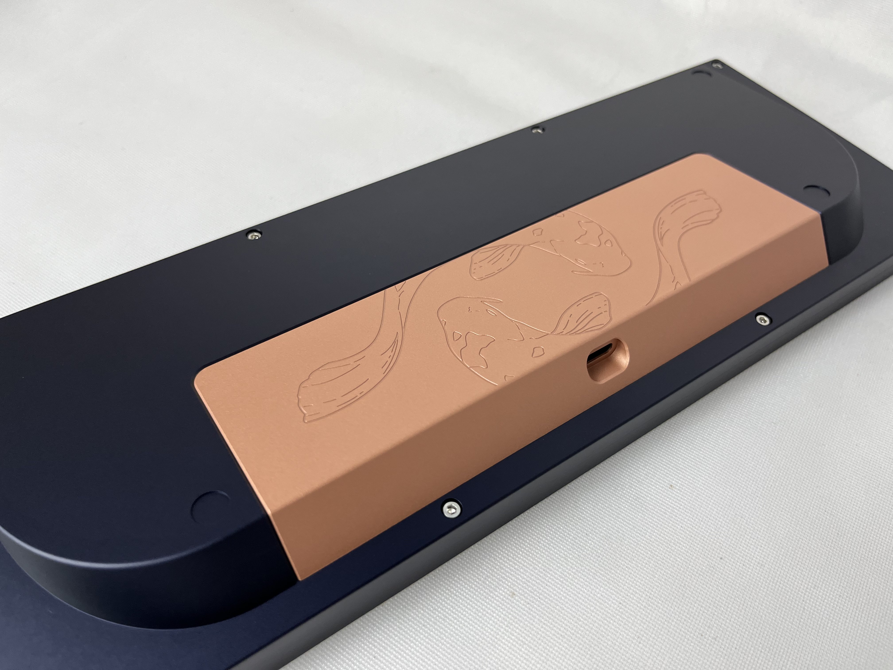

Koi65
Koi65 reimagines the classic 65% layout with sweeping rear engravings and a serene teal palette. The build is tuned for long-form writing sessions with medium tactiles and a dampened polycarbonate plate.
 

Sound profile
The polycarbonate plate and poron foam produce a muted, rounded sound signature—perfect for late-night firmware debugging without distracting teammates on call.